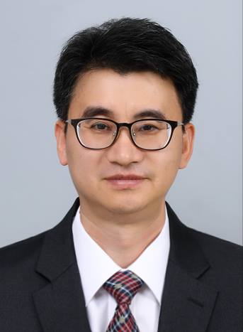

KNU Database & Knowledge Engineering Lab
지도교수

문양세
컴퓨터공학과, 강원대학교(춘천캠퍼스)
강원대학교 IT대학 컴퓨터공학과
강원도 춘천시 강원대학길1 한빛관 303호(컴퓨터공학과)
전화: (033)250-8449, 팩스: (033)259-5978
E-mail: ysmoon at kangwon.ac.kr, ysmoon87 at gmail.com
홈페이지: https://cs.kangwon.ac.kr/~ysmoon/
연구실소개
- 강원대학교 데이터 및 지식 공학(Data & Knowledge Engineering: DKE) 연구실의 홈페이지 방문을 환영합니다.
- DKE 연구실에서는 4차산업혁명의 핵심기술 중 하나인 빅데이터를 심도 있게 연구하고 있습니다.
- 구체적으로는 빅데이터의 수집, 저장, 처리, 분석을 위한 수집 및 플랫폼 기술, 지능형 마이닝/머신러닝 기술, 고성능 분석 알고리즘을 연구개발하고 있습니다.
- 빅데이터 분야는 파이낸스, 팩토리, 의료, 교육, 스포츠 등 응용 분야가 다양하며, 저희 DKE 연구실은 이들 응용 분야의 첨단 빅데이터 기술을 적용하는 연구를 수행합니다.
연구분야
- Data Mining and Knowledge Discovery
- Intelligent Big Data Analysis and Management
- Distributed and Parallel Data Computing
- Collection, Purification, and Management of IoT and Sensor Data
- Real-time Data Stream Processing and Analysis
- High Performance Computing for Big Data
- Data Mining Applications incl. Time Series Analysis, Image Matching and Privacy-Preserving Data Mining
프로젝트
- 과학기술정보통신부/IITP, “초거대 그래프의 지능적 고속 처리를 위한 그래프 DBMS 기술,” 2021년 4월~2024년 12월. (세부과제 책임자)
- 과학기술정보통신부/IITP, "데이터맵 기반 지능형 빅데이터 탐색·활용 핵심 기술 개발," 2020년 4월~2023년 12월. (세부과제 책임자)
- 과학기술정보통신부/NRF, "빅데이터 스트림 환경에서 기계학습 실행 모델의 고성능 분산 병렬 처리 기술," 2019년 9월~2022년 2월. (연구책임자)
- 한국전력공사, "XAI(eXplainable AI) 기반 스마트 에너지 플랫폼 기술 개발," 2018년 3월~2021년 2월. (세부과제 책임자)
- 과학기술정보통신부/NRF, "HPC 기반 분산 시계열 스트림 전처리 및 분석 플랫폼," 2017년 3월~2020년 2월. (연구책임자)
- 과학기술정보통신부/IITP, "국제표준 기반 오픈 데이터 유통 플랫폼 확장 기술 개발," 2017년 3월~2019년 12월. (세부과제 책임자)
- 과학기술정보통신부/IITP, "데이터 스트림 정제를 위한 지능형 샘플링 및 필터링 기술 개발," 2016년 4월~2018년 12월. (연구책임자)
구성원
- 길명선(박사)
- Email: gils at kangwon.ac.kr
- 연구분야: 데이터 마이닝, 시계열 마이닝, 프라이버시 보호 마이닝, 분산 처리, 빅데이터, 데이터 스트림 처리
- 대표 논문:
- S. Park, M.-S. Gil, H. Im, and Y. -S. Moon, "Measurement Noise Recommendation for Efficient Kalman Filtering over a Large Amount of Sensor Data," Sensors, Vol. 19, No. 5, 1-19, 2019.
- M. C. Nguyen, H. Won, S. Son, M.-S. Gil, and Y.-S. Moon, "Prefetching-based Metadata Management in Advanced Multitenant Hadoop," The Journal of Supercomputing, Vol. 75, No. 2, pp. 533-553, 2019.
- 김다솔(박사)
- Email: dasolkim at kangwon.ac.kr
- 연구분야: 분산 시스템, 빅데이터, 데이터 플랫폼, 데이터 마이닝
- 대표 논문:
- D. Kim, M.-S. Gil, M. C. Nguyen, H. Won, and Y.-S. Moon, "Comprehensive Knowledge Archive Network harvester improvement for efficient open-data collection and management," ETRI Journal, Vol. 43, Issue 4, July 2021.
- 김다솔, 길명선, 민차우, 원희선, 문양세, “효율적인 분산 메시징 환경을 위한 Apache Kafka 벤치마크 테스트,” 한국정보과학회 학술발표논문집, Vol. 48, No. 30, pp. 87-89, June 2021.

- 황지언(전임연구원)
- Email: gils at kangwon.ac.kr
- 연구분야: 데이터관리, 과제 협약 및 연구비 관리
- 대표 논문:
- 서지희(학부생)
- Email: jiheeseo at kangwon.ac.kr
- 연구분야: 빅데이터 플랫폼, 지능형 데이터 분석, 차세대 DBMS
- 대표 논문:
- 홍이삭(학부생)
- Email: yisakhong at kangwon.ac.kr
- 연구분야: 빅데이터 플랫폼, 지능형 데이터 분석, 차세대 DBMS
- 대표 논문:
- 정래원(학부생)
- Email: laewonjeong at kangwon.ac.kr
- 연구분야: 빅데이터 플랫폼, 지능형 데이터 분석, 차세대 DBMS
- 대표 논문: